Cycled around the island: 114km of rolling hills and country roads.
To arrive on the Isle of Wight, we departed from Portsmouth and arrived after 20 minutes. There is a long bridge-pier--a site in itself--from the docking area into the town of Ryde, our starting point. We march across the bridge and up the small high street decorated with charity shops and find our bike shop, and ride out from Ryde, going clockwise. The UK is, at the time of writing, expeirencing a heat wave which allows for wonderful English summers: sunsets at 22:00 and great al fresco dining. It is, however, hot for cycling.
The biking route is not well delineated (with exception of the clockwise and anti-clockwise "B" route), which makes for a difficult start, but once we find our way it's somewhat smooth sailing. Scenes of an English countryside would mislead one to believe that it would be a relatively easy ride, but the hills prove difficult. For every down-cycle, there is an up-cycle that requires ample effort. After a while, it gets tiring. And the heat does not help.
But there are moments of real beauty. We had a stretch of flat, country road through farmland on a morning with a light English drizzle. There was the epic climb up the A road up to the cliffs near The Needles--a classic British white-shore geological feature and Navy site. And who could forget all of the teahouses, senior citizens and chatty Wighties we met along the way? These are the charms of the countryside.
Touring the island by bike made me appreciate more. The rolling hills are a metaphor for the perspective on the good and bad of life. Once there was a good section, you knew it would be followed by the bad; but the bad was never so bad because a good stretch was to follow. The push up to The Needles was difficult, but the view from the top tasted sweeter once we'd done a bitter climb. A steep ride down to Ventnor, our first stay of the night and my favourite place, was followed by a steep climb out. Life comes in waves of celebration and defeat; nowhere is that more clear than on a bike ride across the rolling hills of the Isle of Wight.
Pictures below to follow.
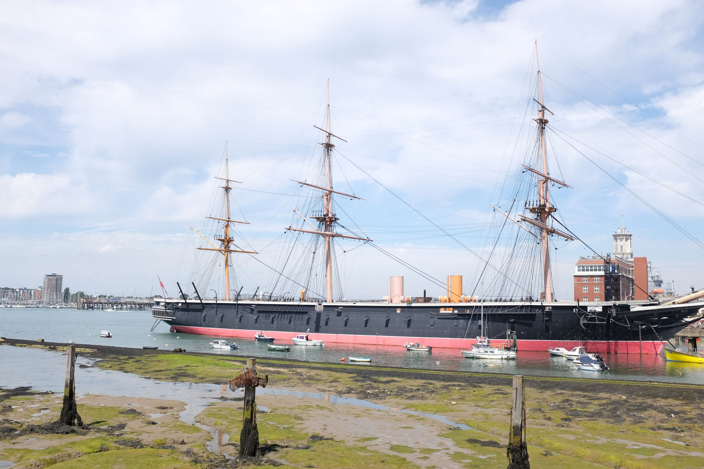
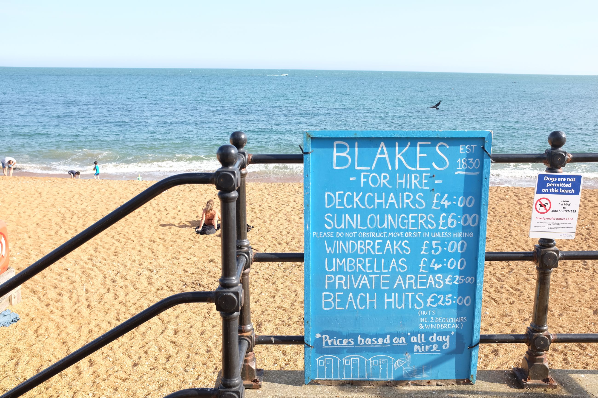
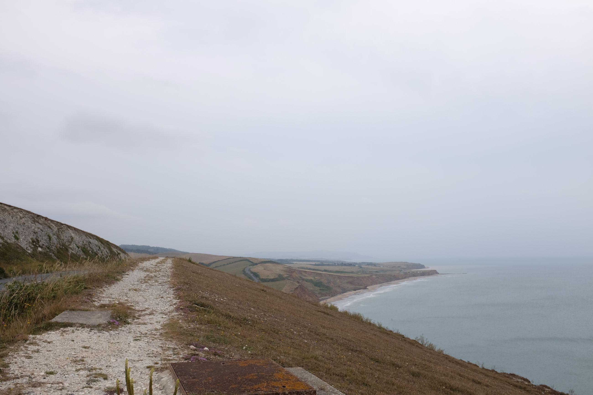
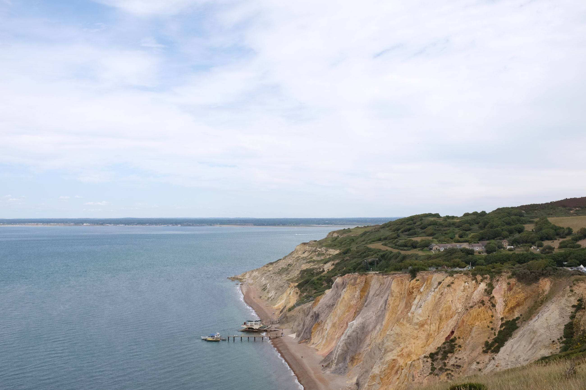
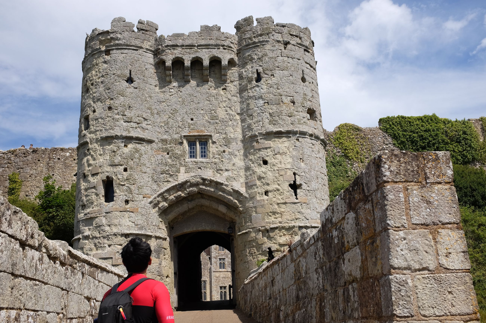
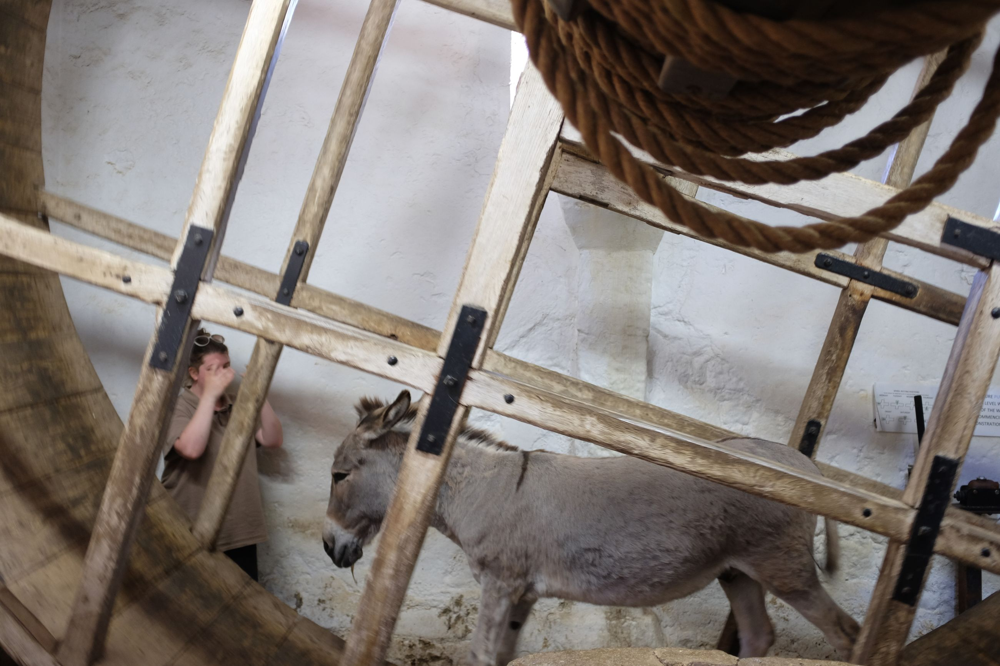
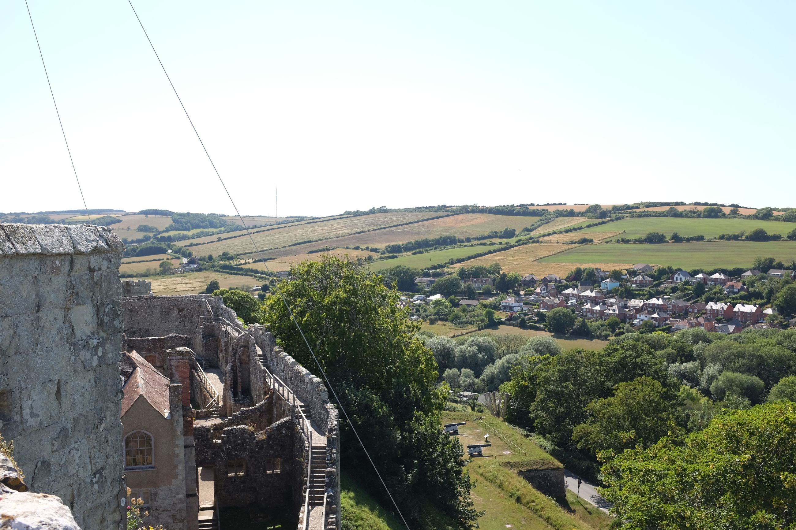
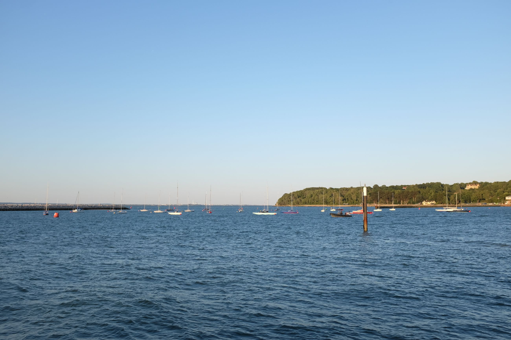
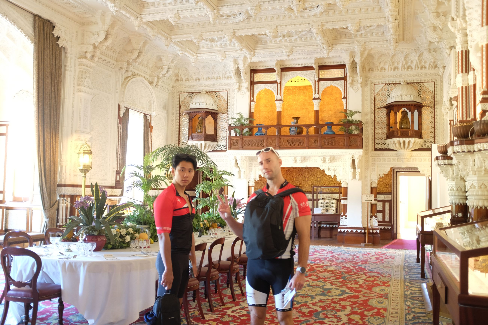
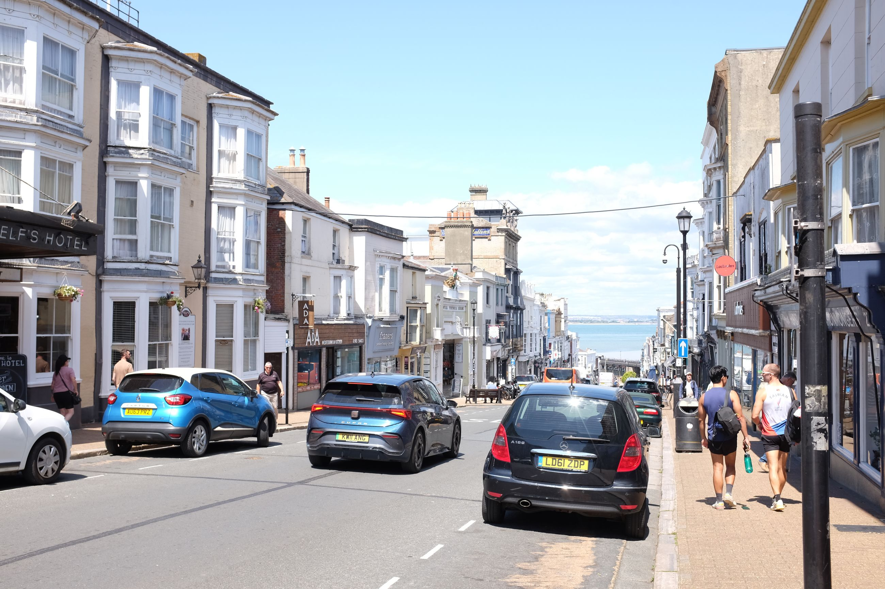
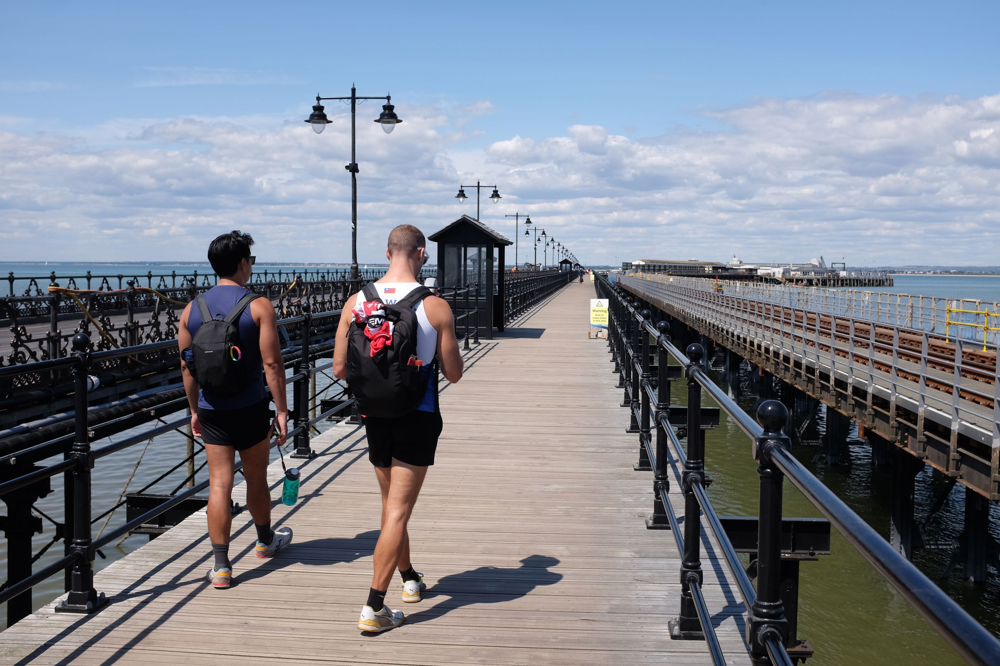